Ti posnameš pot.
Mi jo zmontiramo.
Naloži surove posnetke. Claude montira, ti odločaš.
Filmi s poti.
Prava potovanja, ki jih je Claude zmontiral v Wayfare Studiu iz avtorjevih posnetkov s telefona.


Kje smo bili.
Vsak kraj, kjer je nastal film. Klikni ga, pa se spodaj pokažejo filmi od tam.
Zavrti z vlečenjem. Približaj z gumboma, s ščipom ali s ⌘/Ctrl + koleščkom. Klik na kraj te pripelje k njemu.
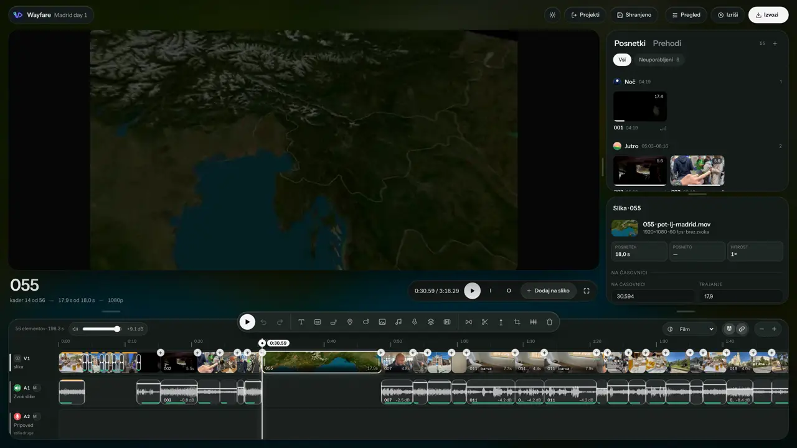
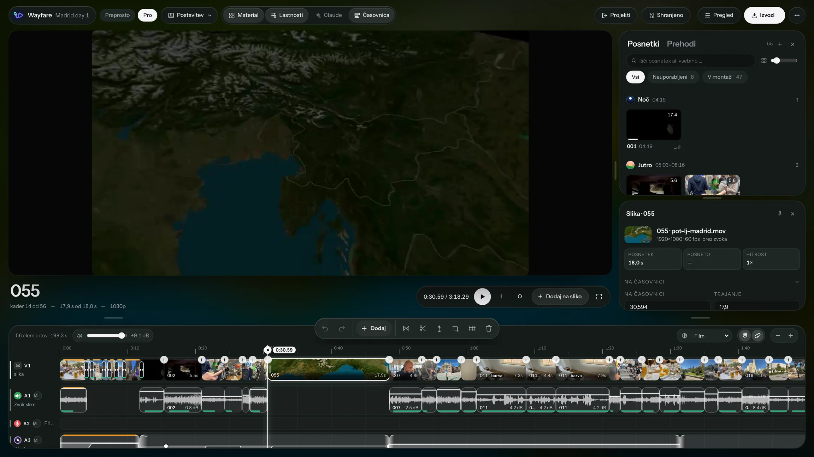
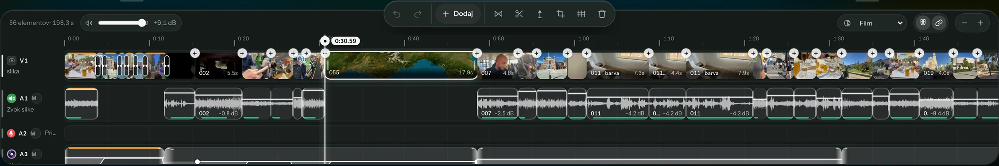
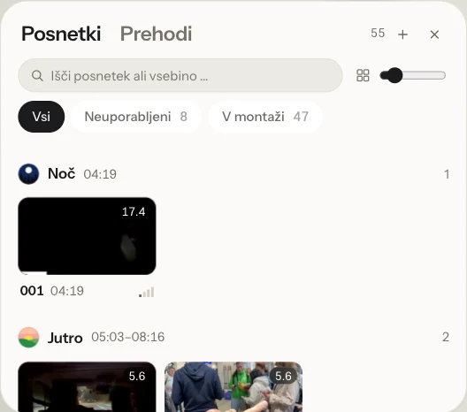
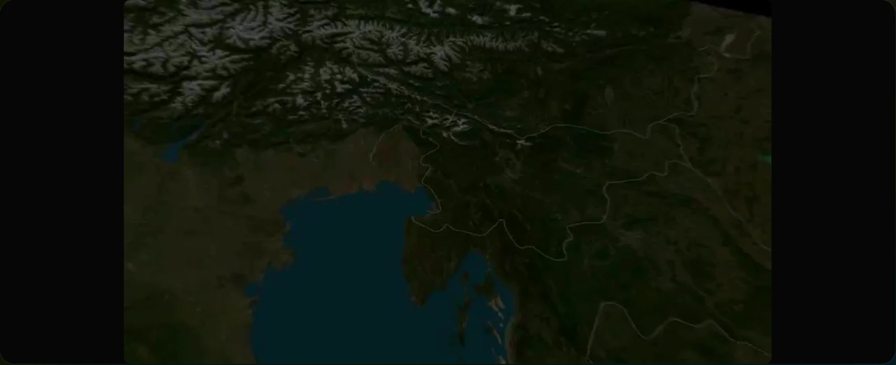
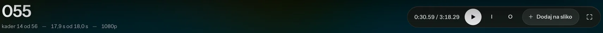
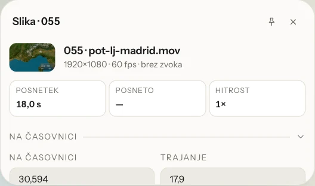
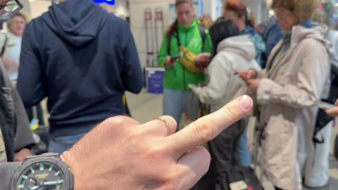
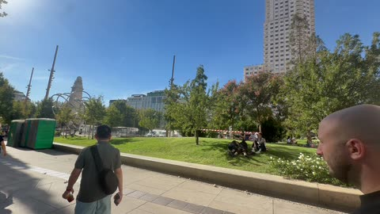
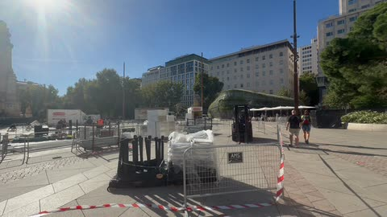
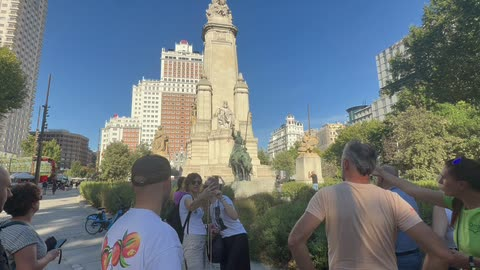
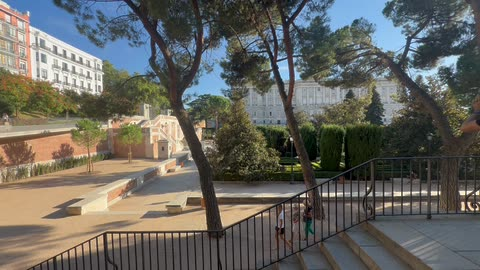
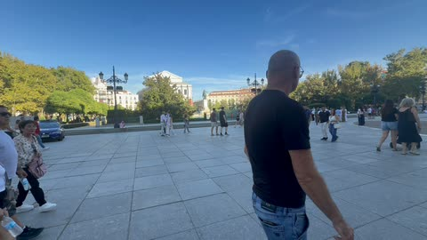
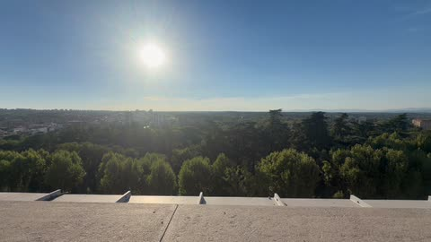
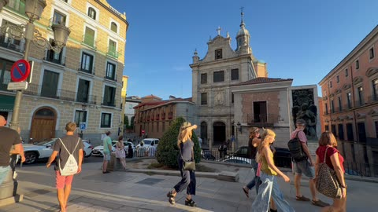
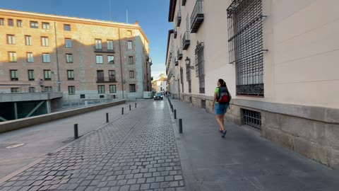
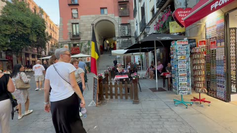
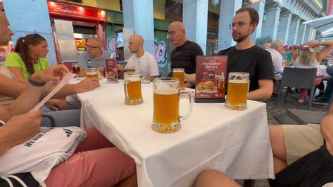
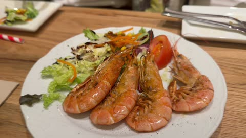
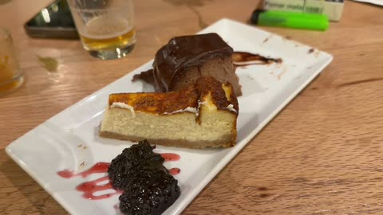
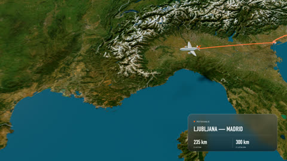
Narejeno — posnetek 14 je krajši
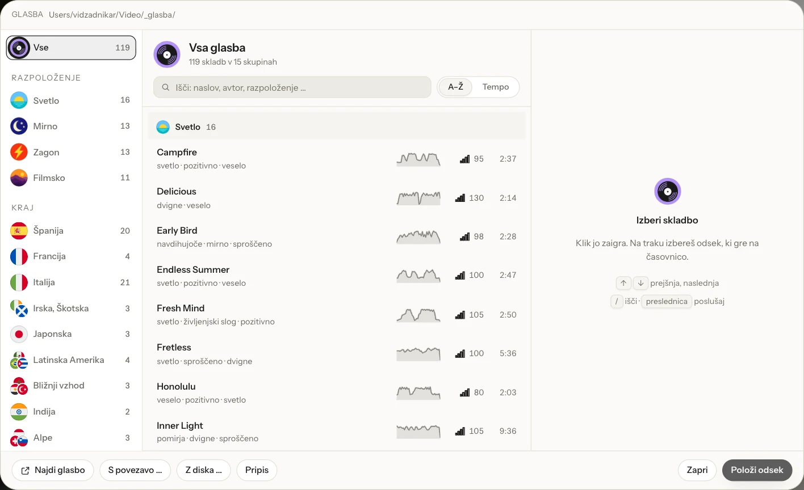
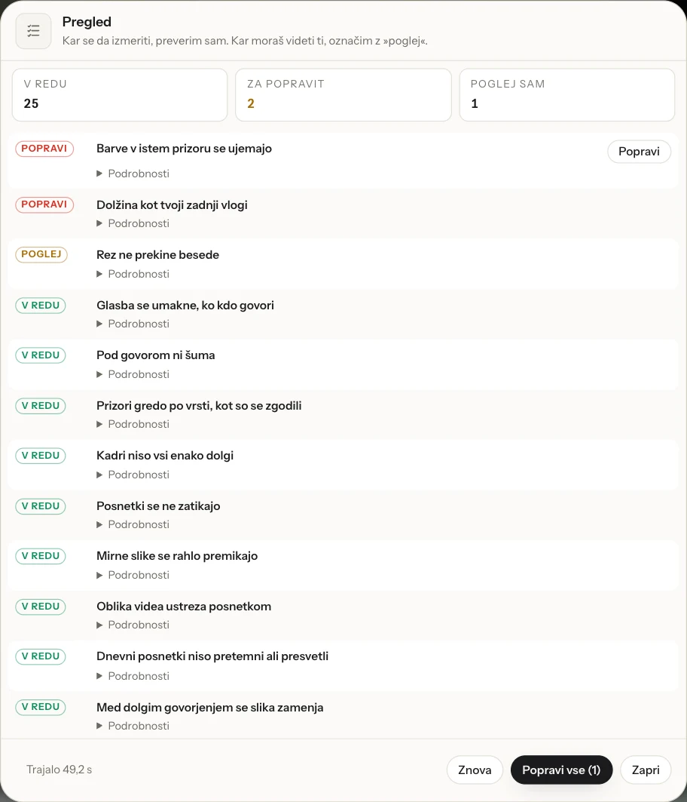
Petinpetdeset posnetkov. En dan.
Naloži jih naravnost s kamere ali telefona.
Vsak posnetek na svojem mestu.
Razvrščeni po času snemanja. Zgodbo tvojega dneva najde sam.
Claude montira. Ti odločaš.
Karkoli spremeniš z enim stavkom. Brez boja s časovnico.
Glasba, ki paše h kraju.
Vgrajena knjižnica po državah in razpoloženju. Pod govorom se sama utiša.
Tvoj dan v gibanju.
Kartice krajev z lokalno uro, napovednik najboljših trenutkov in prava 3D karta tvoje poti.
Preverjeno, preden objaviš.
Več kot petindvajset preverjanj — glasnost, rezi, napisi — in popravki z enim klikom.
Končano. Pripravljeno za objavo.
Izvoz z enim klikom, s paketom za objavo.
Dvainšestdeset sekund
Wayfara.
Film je v angleščini.
Filma ni bilo mogoče naložiti. Odpri ga neposredno.
Claude je vgrajen.
Odpri ploščo Claude ob časovnici, prilepi svoj ključ API pri Anthropicu in povej, kaj želiš. Claude ureja z orodji aplikacije, ti vidiš vsak korak in ga vrneš s ⌘Z. Anthropicu plačaš le, kar porabiš. Uporabljaš Claude Code? Tam deluje naš skill vlog:
# v Claude Code, brez Node.js:
/plugin marketplace add vidzadnikar/
/plugin install wayfare@wayfare
# nato:
Naredi vlog iz mojih posnetkov iz Lizbone.
npx skills add vidzadnikar/
# nato v Claude Code:
Naredi vlog iz mojih posnetkov iz Lizbone.
Potrebuješ Claude Code. Pot z npx potrebuje še Node.js.
Tvoje naslednje potovanje, zmontirano.
Prenesi za macOS- Za Mac z Apple silicon · macOS 12 ali novejši · 434 MB · različica 0.1.0
- Za Windows: Wayfare-Studio-Setup-0.1.0.exe · 312 MB · 64-bitni Windows 10 ali novejši
- Za Android: Wayfare-Studio-0.1.0.apk · 45 MB · Android 8 ali novejši, 64-bitni